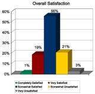
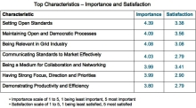

|
GridConnections
August 2007
News and Information for the Open Grid Forum Community
In this Issue:
July 07 Member Survey Results
OGF's Grid Pavilion at Next Generation Data Center
OGF21 - CFP Deadline Extended/Advanced Registration Deadline Nears/Sponsor the Event
Documents Update - Two New Recommendations Published
OGF Event Participation - DMTF Symposium and CCGrid2007
Other Upcoming Events - SYSTOR 2007
Join OGF Today
Closing Comments
July 07 Member Survey Results
Twice per year, we survey the OGF membership in order to better understand member
expectations and needs and how to improve overall member satisfaction. 75 total respondents
took our July 07 survey. Two key graphs taken from the full survey report-out are reproduced
below:


As in the January 2007 survey, the July 2007 survey highlights areas that are both important to
our members and in need of continued improvement including:
-
Having Strong Focus, Direction and Priorities
-
Being Relevant in the Grid Industry
-
Demonstrating Productivity and Efficiency
-
Communicating Standards to the Market Effectively
OGF is committed to improving these and other aspects of our overall performance. We
continue to evaluate our overall performance and have launched numerous initiatives in 2007
to improve execution in the following key focus areas:
1. Tangible Results Aligned with Stakeholders - initiatives include increased rate of
publication of OGF specifications; creation of two documents discussing Grids in the
broader landscape of Distributed Computing and Grids in the Data Center respectively;
and gathering grid users and standards developers together at OGF20 in Manchester.
2. Member Satisfaction and Growth - initiatives include enhancements to the
organizational membership program and an increased emphasis on outreach to potential
members.
3. Event Satisfaction and Growth - initiatives include enhanced event satisfaction surveys
that enable better decisions by OGF operations and better organized RFP process for
obtaining international hosts for future events
4. Communication Clarity and Effectiveness - initiatives include launch of a monthly
eNewsletter; summary "one-pagers" on recently published specifications to enhance
awareness; defining OGF's place in the broader distributed computing landscape (in the
above mentioned Landscape document); defining OGF's position on grids in the data
center; and documenting OGF's technical strategy for the next number of years.
The full set of July 2007 survey results can be view here.
OGF's Grid Pavilion at Next Generation Data Center
The NGDC show is being held August 6-9, 2007 in San Francisco. OGF and our Grid
Pavilion partners - IBM, HP and AMD - are showcasing grid solutions to solve real-world
problems today while helping attendees make the connection that Grids can be a core
architectural element of tomorrow's next generation data centers. OGF board member Paul
Strong from eBay is presenting one of the keynotes and Mark Linesch is presenting 2
sessions: "Grid - Distributed Computing at Scale" and "Utilizing Grid in the Next
Generation Data Center". We will also be handing out documentation in support of Mark's
talks. Please visit the Grid pavilion if you are going to the show and ask your colleagues to
do the same.
OGF21 - CFP Deadline Extended/Advanced Registration Deadline Nears/Sponsor the Event
OGF21 being held in Seattle, Washington October 15-19 will continue the momentum established through OGF's two previous 2007 events by providing high-quality content and a productive work environment to advance grid adoption in research and enterprise.
Call for Community Participation Submission Deadline Extended!
OGF is currently soliciting proposals from the grid community for content for OGF21. The
submission deadline has been extended to August 10th so there still is time to submit your
proposal. We continue to seek content related to the following topics:
-
Web 2.0
-
Grid Case studies
-
Vendor and Software Developer Adoption Issues
-
Software Solutions
Please visit the Call for Participation web page for more information and to submit your proposal.
Advanced Registration Deadline Nears
Register during the advanced registration period and save up to $100. The deadline to
save is August 10th.
Sponsorship Opportunities
At OGF21, over 300 grid leaders, technologists and existing users will come together to
develop Grid standards and workshop best practices that will help them build a superior
grid capability. This is a great opportunity for organizations to showcase their products and
services and to communicate their brand across a wide spectrum of stakeholders, leaders
and decision makers in the grid community. Gain exposure for your organization and
achieve good will by showing your support for OGF! A wide variety of sponsorship
opportunities are available to meet just about any budget, or we will be happy to tailor a
package to suit your needs. For complete details, see the Sponsorship Prospectus.
Documents Update - Two New Recommendations Published
Recently Published Recommendations
The following recommendation documents were published last month. Congratulations to
all the authors and working group members involved in getting this important work
accomplished!
GFD.110 Information Dissemination in the Grid Environment - Base Specifications
Authors: S. Davey, V. Dialani, R. Fehling, S. Fisher, D. Gawlick, C. Kantarjiev, C. Madsen,
Malaika, S. Mishra, M.Shankar
GFD.109 WS-Naming Specification
Authors: A. Grimshaw, D. Snelling
New Document in Public Comment
Prior to formally publishing a document, OGF solicits "public comments" from the greater
grid community, which is an important step in the OGF document process. The following
document is now available for public comment. Please take a moment to provide your
feedback.
Grid Network Services Use Cases from the eScience Community
OGF Event Participation - DMTF Symposium and CCGrid2007
2007 DMTF Alliance Partner Technical Symposium
DMTF hosted an Alliance Partner Technical Symposium from July 16th through July 20th, 2007.
DMTF and OGF have an official collaboration "work register" and Tom Roney is our liaison to
DMTF. OGF had a major presence at the symposium including the following talks and
speakers:
CCGrid 2007
The Seventh IEEE International Symposium on Cluster Computing and the Grid was held in Rio
de Janeiro May 14-17, 2007. Geoffrey Fox was the keynote presenter. Geoffrey's keynote was
on "Grids challenged by a Web 2.0 and Multicore Sandwich". He reports that the event
"covered the range of Cyberinfrastructure from parallel computing to Grids and its excellent
attendance attested to the vitality of research in Latin America and in particular Brazil. This was
also seen in several talks including a special session on the Latin American Grid LAGrid."
Other Upcoming Events - SYSTOR 2007
SYSTOR 2007 Haifa, Israel October 29-30, 2007
This conference, organized by IBM and the Technion of Haifa, includes two complementary
events: A Virtualization Workshop and a Storage Practitioners' Seminar. The call for papers for
the virtualization workshop is open until August 16. For more information, click here.
Additional Events
Our calendar page provides a full listing of grid and related technology events for 2007.
Join OGF Today
OGF membership provides resources, opportunities and insight focused on helping you and your organization stay engaged and ahead in grid technology. OGF membership is a resource from which you can draw the most essential and relevant information about grid standards, issues and best practices . Participation in OGF offers the opportunity to contribute to, and benefit from, a collective point of view at an industry level. As an OGF member, organizations enjoy a wide variety of benefits including:
-
Recognition through increased corporate exposure and signal to end-users, partners, grid industry experts, media and analysts that you are an industry leader driving specifications and standards
-
Influence industry change by participating in OGF committees and working groups which provides a tremendous resource to understanding emerging strategies, standards and operational models
-
Insight into the collective thinking of peers from a variety of industries and institutions who are involved in similar projects and initiatives; accessing fresh ideas from others who are addressing the real needs of technology users
Please consider joining OGF today. The vast majority of our funding comes from membership fees and we simply would not exist without your funding support.
Closing Comments
The success of OGF depends upon member participation. All of the significant events, activities and accomplishments of the forum are member driven. Please contact any OGF staff member if you want to get involved. We welcome your input!
|